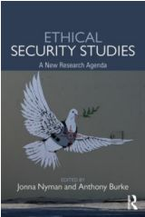

收录于合集

简 介
【文章原题】 Advancing Without Attacking: The Strategic Game Around the Use of Force
【作者简介】 Dan Altman ,哈佛大学肯尼迪学院贝尔弗中心（Belfer Center）博士后研究员
【文章来源】
Security Studies ,Volume: 27 ,Issue:1,Pages:58-88
【期刊介绍】

Security Studies 由英国泰勒与弗朗西斯出版集团（Taylor＆Francis）出版，每年发行四期，主要关注国际关系研究。
【编译】 刘瑛琛
【校对】 李 桐
【 核心观点 】
1.在现有的关于危机战略的观点中，胁迫、展示决心与边缘政策是解释国家在危机期间政策的最主要的概念工具。
2.但现有观点并不足以解释一些危机进程，本文提出一套与之相矛盾的理论框架：非暴力推进。在这一理论框架之下，国家在不使用武力的底线周围活动，凭借某些“打擦边球”的行为获益。
3.国家之所以重视不使用武力的底线，是因为一旦逾越这一底线，战争便很可能爆发。但国家可以通过寻找“灰色地带”或忽视对手的武装力量来突破这一底线的束缚，并通过既成事实或施加压力来攫取利益。
【提纲】
-
摘要
-
引言
-
危机战略的现有观点
-
无进攻前进
-
1948-1949年第一次柏林危机
-
结语
【摘要】
**
**
什么才是国家在危机期间所实施的战略博弈的本质？广泛的研究证实了这一主要答案：高压谈判。国家通过表明决心、确立其威胁的可信度与强迫对手撤退的方式来占据上风。然而，本文并不是（或是说除了）探讨传统的高压谈判，也揭示出国家常常会根据自身的一套规则或策略来展开一场不同的博弈。文章探究了国家是如何战胜它们的对手的：在底线附近活动、通过既成事实获得收益以及尽可能在不明确使用武力的情况下向对手施压。基于这一前提，本文为理解危机期间的战略互动发展出一套理论框架，即非暴力推进；并在关注其他重大危机的同时，展示了这一理论框架最能够解释 1948-1949年第一次柏林危机的进程。
引言
2014年，俄罗斯在未发动战争的情况下，入侵并吞并了克里米亚半岛。在这一过程中，俄罗斯所使用的不诉诸武力的策略使西方政策制定者感到恐慌，他们认为俄罗斯开拓了出一套新颖的、21世纪的有限进攻模式。
然而，本文作者认为，俄罗斯仅仅是在不使用武力的底线周围活动而已，在历史上曾有许多相似的策略，我们只是尚且缺乏一个理论框架来对其进行解释。因此，作者首先回顾了现有的关于危机期间战略互动的观点，并以托马斯·谢林的见解为基础，发展出“非暴力推进”的理论框架，用以理解俄罗斯这一策略的运行机制，同时以1948-1949年第一次柏林危机为案例，对“无进攻前进”的理论框架进行了论证。
危机战略的现有观点
同战争一样，危机是力量与意愿的冲突，危机冲突双方都想恐吓对手使他们退步以实现自身意愿。危机战略的现有观点主要有三大类：强迫、表明决心以及边缘政策。
强迫是指迫使对手停止做某件事或者不得不按照他人的意愿去做事。
表明决心主要是以显示武力、公开声明与军事动员等方式，向对手表明自身意志，迫使对方在战争爆发前退却。
边缘政策则是指，当向对手传递出的信号无效时，一方可以证明自身发动战争的能力和决心，以此向对手施压来结束危机的进程。这是因为，危机不仅仅是双方意愿的冲突，也是一场精神上的战争，首先退缩的一方失败。
非暴力推进
在危机进程中，冲突双方将尽己所能去占据上风。因此，国家绝对不能容忍其对手可以不受约束地对其使用武力，设置底线就成为必然。底线可以有多种形式，如不越过边界、不使用武力或不建造核武器，最普遍的便是不使用武力。由于约束广泛存在，国家也随之在约束的边缘进行博弈，并通过各种擦边球的行为获得收益。
（一）国家如何战胜不使用武力的底线？ 这主要探讨的是“非暴力推进”在何种情境下能够实现，主要有两种形式：第一，忽视对手武装力量，同时在两难情境下寻找第三条出路来获得收益，以此突破不使用武力的底线；第二，着眼于“灰色地带”，“灰色地带”为在无明显进攻行为的情况下冲突一方向前推进提供了可能。
**（二）国家如何获得收益？在 “非暴力推进”中，国家通过两种方式来取得收益，这两种方式分别为既成事实与施加压力。**当对手立场松动而非直接报复时，国家就可以通过既成事实获得单方面的有限的收益。在不逾越不使用武力的底线时，既成事实更容易带来收益。与传统威慑相比，既成事实只是冲突的一方单方面进行改变，而传统威慑是一方向另一方进行威胁，使另一方撤退。施加压力则处于既成事实和传统威慑之间，国家单方面采取措施向另一方施加压力，但冲突双方不必正面对抗。施加压力有着多种形态，较为普遍的如通过代理人发动进攻或将部队伪装成其他武装力量进行进攻。同时我们也需要注意，无进攻前进的策略并不都能取得胜利。
（三）不使用武力底线的重要性。 通常来讲，如果危机中一方选择了使用武力，则另一方很大程度上会选择进行报复，战争将一触即发。然而战争是代价高昂的，因此各国不得不重视不使用武力这条底线的重要性。尽管如此，对这条底线小小的触犯并不会使战争变得不可避免。
1948-1949年第一次柏林危机
二战后德国由美、英、法、苏四国分区占领，首都柏林位于苏占区内部，同样由四国分区占领。随着冷战的加剧，英法美三国为抗衡苏联，决定将三国所占区域合并为西德，并在西德进行了货币改革，这引起了苏联的不满。1948年4月1日，苏联开始切断西德通往西柏林的水陆交通，西柏林被封锁起来。作为回应，西方国家向西柏林进行空运，国际局势顿时紧张。危机持续了一年之久，随后渐趋缓和。1949年5月12日，苏联结束封锁，史称“第一次柏林危机”，也称“柏林封锁”。
现有的关于危机战略的观点直接简明地阐述了这次危机：危机是因为西方国家与苏联的意图冲突产生的；在危机过程中，双方都在展示自身的决心，比如西方国家部署了B-29轰炸机，而苏联则采取了封锁。但本文作者则认为，关于危机战略的现有观点与第一次柏林危机期间的众多事件产生了冲突，相反地，第一次柏林危机很好地论证了无进攻前进的理论框架，并以武装护航计划的搁浅、苏联以探照灯晃射西方飞行员的眼睛而非击落飞机等进行论证。
结语
在现有的关于危机战略的观点中，胁迫、展示决心与边缘政策成为解释国家在危机期间政策的最主要的概念工具。然而，本文提出一套与之相矛盾的理论框架：无进攻前进，并以第一次柏林危机对其进行了论证。这一套理论框架的提出开始是为了解释俄罗斯对克里米亚的入侵模式，但在当今世界，它对大多数危机进程的解释都有重要的借鉴意义，特别是在那些力量相对复杂的地区发生的危机，如中国周边的领土争端。
点击 阅读原文 可获取全文pdf版！
更多阅读
【一周预告】国政学人下周（10.29-11.2）文章推送安排预告！ ****
- SSCI编译
【IS杂志·重磅】安全曲线和国际政治结构——一种复合新现实主义理论
【N &N杂志】后萨达姆时代伊拉克的邮票肖像：宗派特定符号还是民族主义意象？
**【一带一路】欧洲金融安全与中国经济治国之道：以一带一路倡议为例
**
【PSQ杂志】美国对韩“核保护伞”：核武器与扩展威慑
**
**
… （请点击此链接查看更多历史文章！）
**
**
- 中文转载
… （请点击此链接查看更多历史文章！）
**
**
- 资源更新
… (请点击此链接查看更多历史文章！）

为方便学人及时接收高质量文章推送
别忘了把国政学人设置 星标 哦~
**
**